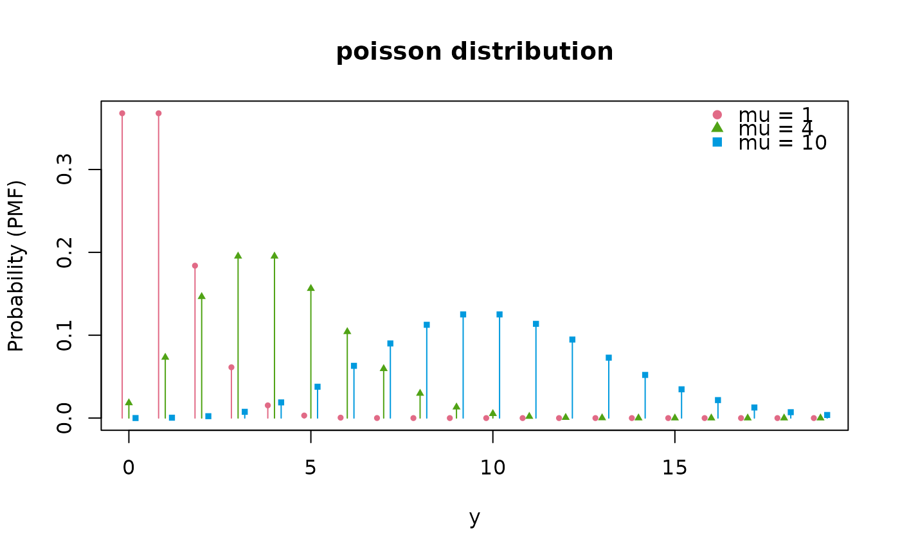
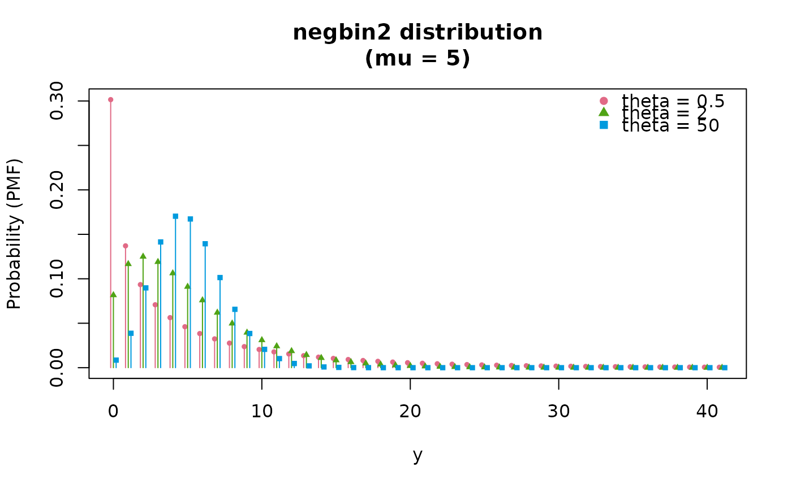

Draws the probability mass of a discrete family as stems over the integers
in range, one set per parameter setting. A component of theta given as a
vector asks for one setting per element, exactly as in
plot.continuous_distrib().
Arguments
- x
An object inheriting from
discrete_distrib.- theta
A named list or numeric vector holding one entry per parameter of
x. A component of length \(k > 1\) draws \(k\) sets of stems, and every component must have length 1 or that same \(k\). Missing, a random parameter is drawn bygenerate_random_theta().- xlim
A numeric vector of length 2, or
NULL(the default) to compute the range from the quantiles over every setting.- legend
Logical of length 1: draw the key when several settings are plotted. Defaults to
TRUE.- ...
Passed to
graphics::plot(), for instancemain,xlaborylim. Acolorpchgiven here wins over the palette and is recycled over the settings; anltyis accepted and has no effect on the stems.
The two keys, and why they are not the continuous ones
Settings are separated by color and symbol together, the symbol sitting at the top of each stem where the point already is. The line type is not used here: dashing a stem is what it would do, and a dashed stem reads as a broken one, so at a support of any size the panel fills with fragments that cross each other.
Several settings are also shifted sideways by a fraction of the spacing, so that equal masses at one support point stay countable instead of standing one in front of another.
See also
plot.continuous_distrib() for a density;
plot.distrib_fit() to compare a fit with data;
plot_settings(), plot_keys() and plot_labels() for the pieces.
Examples
# Three rates, whose masses are countable at every support point because
# the settings are offset sideways.
plot(poisson_distrib(), list(mu = c(1, 4, 10)))

# Overdispersion at a fixed mean: the mass spreads as theta falls.
plot(negbin2_distrib(), list(mu = 5, theta = c(0.5, 2, 50)))
